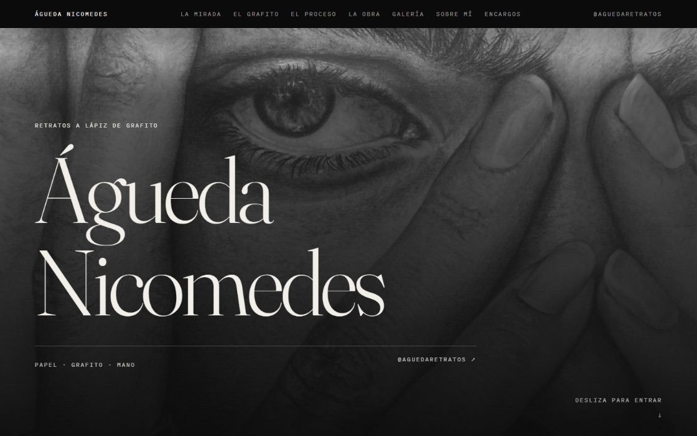

01
Interfaz
Lo que ve y toca el usuario
- HTML
- CSS
- JavaScript
- Bootstrap
Disponible para nuevas oportunidades
>
Desarrollador de software con formación en Desarrollo de Aplicaciones Multiplataforma. Construyo aplicaciones Java, interfaces web y modelos de datos cuidando el detalle y el código limpio.

01 — Perfil
Soy desarrollador junior con formación en Desarrollo de Aplicaciones Multiplataforma (DAM). He trabajado en entornos reales de desarrollo, donde he adquirido experiencia práctica en programación, control de versiones y trabajo en equipo.
Mi experiencia previa en el sector de la electromecánica de vehículos me aporta algo que no se aprende solo en un aula: organización, resolución de problemas bajo presión y la costumbre de entender un sistema completo antes de tocarlo.
Busco un equipo en el que seguir creciendo, aportar desde el primer día y construir software que se mantenga bien a largo plazo.
02 — Tecnologías
Las herramientas con las que trabajo en el día a día.
Lo que ve y toca el usuario
La lógica que hace que funcione
Aplicaciones para Android
Dónde se guarda todo
Con lo que construyo y versiono
03 — Qué hago
04 — Trabajo
Una web en producción y mis repositorios públicos, actualizados en directo desde GitHub.

Proyecto destacado · en línea
Web para Águeda Nicomedes, artista de retratos a lápiz de grafito. Me encargué del diseño, el desarrollo y la publicación con dominio propio.
05 — Contacto
Estoy abierto a oportunidades como desarrollador junior y a colaboraciones. Escríbeme y te respondo lo antes posible.
$ cat contacto.txt
$